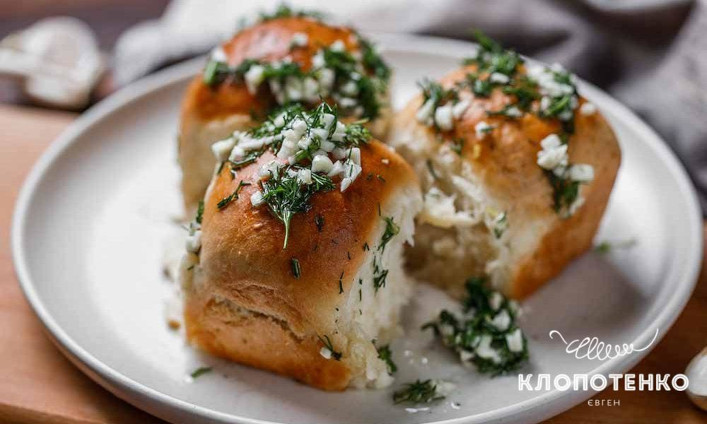

Пампушки

Опис
Наш український борщ прекрасний без жодних сумнівів: ароматний, яскравий за кольором, смачний. І найкращим доповненням до нього, звичайно, стануть пухкенькі золотаві пампушки з заправкою із часнику та зелені.
Оскільки ми будемо готувати пампушки з дріжджового тіста, потрібно підготувати деякі інгредієнти, щоб все точно вийшло. Вершкове масло краще дістати з холодильника трохи заздалегідь, воно нам буде потрібно розм’якшене.
Молоко потрібно трохи підігріти перед тим, як вливати у тісто. Важливо не нагріти його занадто, кипіти воно точно не має. Щоб дріжджі спрацювали, воно має бути просто трохи теплим.
Інгредієнти
- Пшеничне борошно, 450 г.
- Тепле молоко, 250 мл.
- Вершкове масло, 100 г.
- Сухі дріжжі, 10 г.
- Цукор, 1 ст.л.
- Сіль, 1/2 ч.л.
- Зубчики часнику, 3 шт.
- Кроп, 6 шт.
- Соняшникова олія, 2 ст.л.
- Оцет, 1 ст.л.
- Сіль та перець для заправки, на смак
Приготування
- У великій мисці змішайте спочатку сухі інгредієнти для тіста: 450 г пшеничного борошна, 10 г сухих дріжджів, 1 ст. л. цукру і ½ ч. л. солі. Цукор всипайте в інший бік миски від дріжджів. Потім влийте 250 мл теплого молока, додайте 100 г розм’якшеного вершкового масла.
- Замісіть еластичне тісто, воно не повинно прилипати до рук. Залиште його в теплому місці на 45 хвилин, накривши рушником або харчовою плівкою. Потім обімніть тісто і розділіть на 12 кульок, сформуйте пампушки. Розігрійте духовку до 180 градусів.
- Акуратно розкладіть пампушки у форму, попередньо змащену вершковим маслом чи олією. Залиште пампушки у формі ще на 30 хвилин. Ми використовували прямокутну форму розміром приблизно 28х16 см, але можна взяти круглу чи будь-яку іншу, тут це не має великого значення.
- Поставте форму з пампушками, що підійшли, у розігріту до 180 градусів духовку випікатися на 25-30 хвилин.
- Тим часом зробіть начинку. Очистьте 3 зубчики часнику і дуже дрібно порубайте ножем. Викладіть у маленьку піалу. Помийте й обсушіть зелень 6 гілочок кропу і теж дрібно посічіть. З'єднайте з часником. Додайте 2 ст. л. соняшникової олії, 1 ст. л. оцту і сіль з перцем до смаку. Ретельно перемішайте.
- Щедро полийте часниковою заправкою готові пампушки, поки ще гарячі, так вони краще наситяться ароматами.
Дякую Клопотенко за рецепт.
English version
На головну